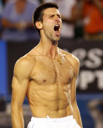

Previous: Rod Laver and The Mean Streak | 🏠 Mental Game Home | Next: Self-Acceptance and Confidence
Self Belief
Comprehensive unified tennis knowledge base — Fundamentals, Stroke Analysis, Reference Library, and more
Self Belief
By Allen Fox, Ph.D.

What kind of self belief does it take to win the Australian final and defeat Rafa in 5 sets?
Most of us lack the self-belief of champions. As competitors we are all told, "It is crucially important to believe in yourself." Our coaches tell us that the great players believe in themselves, and this is what carries them past obstacles to victory in major championships.
We've recently been treated to an amazing example of self-belief on the part of two great champions, Novak Djokovic and Rafael Nadal in a marathon final at the 2012 Australian Open.
We are admonished that unless we believe in ourselves in the same way as these champions, all of our work may come to naught. Victory will remain elusive. Worst of all, we fear that if we don't believe in ourselves we have the dreaded "loser's mentality."
So, we search the recesses of our hearts for that vital conviction. As we walk on court to face a highly-ranked and fearsome opponent we search for self-belief and are diminished when we come up empty! Despite our efforts, we simply can't bring ourselves to presume, with ample certainty, that we are going to win.
We have been indoctrinated to think that "winners" always believe they will win. Since we don't, we suspect that we lack some crucial mental element and that our match is half-way lost before we even start.

Marat Safin: a Grand Slam winner who didn't think that was possible.
Players try in various ways to increase self-belief. They find coaches that tell them how talented and great they are. They meditate about winning, thinking over and over, "I am going to win. I am going to win." It doesn't help.
They visualize winning, picturing in their mind's eye hitting great shots past helpless opponents. It momentarily feels good, but on court harsh reality sets back in quickly. Or they try positive self talk. "I am powerful. My forehand is great. My serve is devastating." Unfortunately, they still have to perform, and it proves no easier. In the end the highly-ranked, scary opponent remains as scary as ever.
Are those of us not blessed with the champion's certainty doomed to defeat? Not by a long-shot! The fact is you can still win without the confidence of Roger Federer.
Consider the words of Marat Safin after he won the 2005 Australian Open: "This is a huge relief for me, because didn't believe I could win. I've already lost two finals here before and I started to doubt myself. I thought it was going to happen again."
Since Safin won the tournament anyway, it is obviously possible to win without a great deal of self-belief. It is easier, of course, if you have it, but if you don't, there are positive of steps you can take to improve your chances.

Confidence: the warm, relaxed sense we are going to win.
First, however, let's take a deeper look at what we really mean when we talk about "believing in yourself." What we are really talking about confidence. Self-belief is another way of saying confidence. (Hereafter, I will use the terms "confidence" and "self belief" interchangeably.)
We all know what confidence feels like when we step on court – it's that warm, relaxed, certain, almost subliminal sense that we are going to win the match. And since it is such a great help in winning, it is useful to look at what causes confidence, and more importantly, to try to figure out how to get more of it.
Can we get it out of some psychologist's self-help book or, better yet, is there a pill we can take? (And if so, in which drug stores are they sold?)
Keep your wallet in your pocket, because there is, unfortunately, no intellectual way or over the counter drug that can create confidence out of uncertainty. As they used to say at Smith Barney, it must be obtained the old-fashioned way, you must earn it.
And this is done by winning. Only winning begets true confidence because confidence is a subconscious and emotional "expectation of success," and we develop these expectations, in large part, because of past experience.

Winning only one of every three matches against Rafael Nadal affects even Federer's confidence.
Like any expectation, past history plays a powerful part in its generation. Since the sun has, without fail, come up in the morning for the past several billion years we expect it to come up tomorrow morning too.
In fact, we are completely confident it will do so. If it had, in the past, come up only nine mornings out of ten we would still be pretty confident of its rising tomorrow, but not absolutely confident, and if its history had been to come up one morning in ten we would be downright dubious.
In the latter case one could line up psychologists from coast to coast telling you to have confidence in tomorrow's sunrise or prescribing visualization exercises where you picture the sun coming up, and you still wouldn't be confident. Reality and history will out.
It is the same with tennis. The more you win the more you subconsciously expect to win, that is, you become more "confident" or have more "self-belief." With this increased self-belief in hand, you become stimulated rather than frightened in the clutch and are, therefore, more likely to produce your best tennis.
On the other hand, if you have been losing, your confidence diminishes. You develop the lurking fear, especially in crucial situations, that something bad is about to happen.
You get shaky and become more likely to perform poorly and lose. Just look at Federer and Nadal. In their Slam encounters in the last few years, Roger simply has been unable to sustain his belief that he can actually win, even when he starts amazingly well.

Winning Slams breeds confidence, which breeds more wining.
Winning breeds confidence and confidence breeds more wins, just as losing tends to breed more losses. This has an unfortunate circular ring to it, but without victories, real confidence is an uncommon occurrence. Never fear, we will soon discuss how to break the cycle.
Increases in confidence with victory are cumulative - the more you win, the higher your confidence gets. Moreover, recent victory is another factor.
Winning a match yesterday has more impact on your present level of confidence than winning one last week or last month. This is another way of saying that the increase in confidence caused by a victory gradually decays with the passage of time, although the decay never completely reduces your level of confidence back to where it was before the last victory.
Read More From Allen!
Visit him at www.allenfoxtennis.net

Winning the Mental Match Dr. Allen Fox
Tennis is mentally the most difficult sport due to it’s personal nature which makes winning and losing feel more important than they are. In this new book, Allen offers his proven solutions to problems such as choking, reducing stress, finishing matches, and developing confidence. Based on a life time of high level play and coaching success, it’s a must for all competitive players.
Click Here to Order.

Winning may not be everything, but Dr. Allen Fox points out that, if we are honest with ourselves, winning is still eminently preferable to losing. In his new book, The Winner's Mind, Allen lays out an original step-by-step plan for succeeding at any of life's endeavors, based on his first hand and very personal observations of the careers of both world-class tennis players and successful businessman.
The bottom line is that even if you are not a born champion--and only a tiny percentage of us are--you can still use the success strategies of champions to tilt the odds in your favor. Writing with brutal honesty and dry humor, Fox lays out the common mental characteristics of winners in sports and in life. He explains the critical role of intellect over emotion. He analyzes the struggle between ambition and fear and the insidious and pervasive fear of failure that undermines so many of us.
He then outline how to confront and overcome these fears in your life and career, even when they are initially subconscious. Must reading from one of the great thinkers in tennis, and a Renaissance Man in life. Click Here to Order.
To purchase this book you can also send a check for $17.95 to Allen Fox, 1120 Inverness Place, San Luis Obispo, CA. 93401. The price includes shipping.

Allen Fox PhD is a former world class player, a coach, a psychologist, and one of the most original and insightful analysts in modern tennis. A top 10 American player from the glory days before Open tennis, Fox played many of the legendary greats, among them Roy Emerson, Rod Laver, Stan Smith, and Arthur Ashe. At Pepperdine he developed the men's tennis program into an elite contender for national titles, and gave Brad Gilbert the insights that became the foundation for "Winning Ugly". His book Think to Win is a modern classic. He has also starred in a series of acclaimed videos, including Pro Secrets of Match Play and Allen Fox's Ultimate Tennis Lesson.
Source: tennisplayer.net archive — Self Belief.docx (John Yandell teaching library, 2002-2022). Extracted and rendered as HTML for Tennis Future Lab.